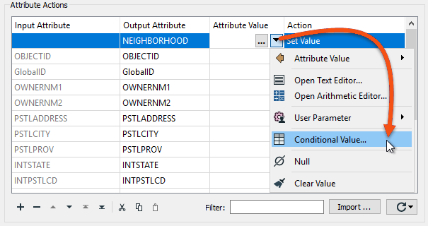
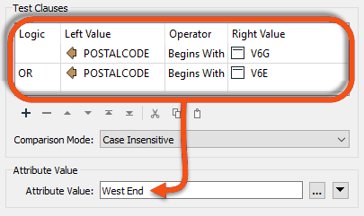
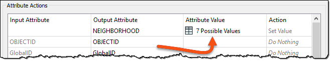
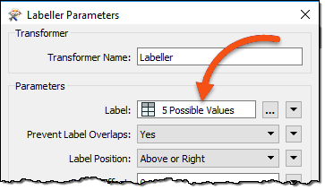

After completing this lesson, you’ll be able to:
After filtering your data with a transformer like the Tester or the TestFilter, you can create attributes or set their values based on these divisions. Here, an author divides data into neighborhoods using a postcode attribute and the TestFilter:
However, many AttributeManager transformers like this are not a good idea. It causes the workspace to be bloated: hard to navigate and harder to edit. It could scale better, too. Since each value needs a separate TestFilter port and AttributeManager combination, it's easy to imagine the difficulties involved with more than 50 values!
One solution is to use a simple AttributeValueMapper transformer. However, that transformer only permits a single simple condition, such as X=Y. If a more advanced set of conditions is required, the preferred solution is conditional attribute values.
You can use conditional attribute values instead of many transformers of the same type. Instead of creating a set of conditions and values as separate objects in a workspace, you set both conditions and values inside a single transformer.
The option for conditional attribute values is in the drop-down dialog wherever you can provide an attribute value. For example, in the AttributeManager:

In the above screenshot, a workspace author creates a new attribute called NEIGHBORHOOD. The values for NEIGHBORHOOD are conditional upon other attribute values and – in this example – are set up like this:

You can copy and paste conditions using the Copy Row and Paste Row buttons to save time and prevent data entry errors. You can copy and paste between transformers of a similar style, e.g., the Tester and TestFilter.
Like the AttributeValueMapper, a series of conditions (left) map to different values (right). However, unlike the AttributeValueMapper, this dialog allows much more complex conditions than a simple 1:1 mapping. That’s because full test capabilities are built into this dialog.
The conditions are defined by double-clicking in the Test Condition field to open up a Tester-style dialog. Both the condition and the output value can be set within this dialog:

Many options beyond simple text or numbers are available for setting the Attribute Value in the Parameter Conditional Definition dialog:

Once the conditions are set, the original dialog – in this case, an AttributeManager – looks like this, with the number of conditions defining the number of possible values:

Like attribute construction, conditional values apply to attributes and most FME parameters. For example, you can create labels conditional upon specific tests using the Labeller transformer itself:

This way, you don't have to create the labels in an AttributeManager and then apply them in the Labeller as a separate task.
You can use cached values in some transformers when providing an attribute value. This feature makes it faster and easier to build tests. For example, you could use this feature to filter out a specific value from NEIGHBORHOOD, searching the list of neighborhood names to find the correct one.
In a transformer with a cache and an attribute value parameter, click the drop-down arrow and choose Cached Values (if available). A list of values is displayed to choose from, including a search filter.
Conditional attribute values are great for when you need to map (or set) an attribute in relation to the value of an existing attribute and when the conditions are more complex than can be handled in a simple AttributeValueMapper (or AttributeRangeMapper) transformer.
In essence, conditional values are like a combination of TestFilter and AttributeCreators.